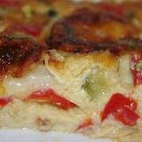

Clafoutis poivrons chèvre
Ingredients
×
- 2 poivrons
- 1 oignon
- 20 g de beurre
- 2 gousses d'ail
- 2 oeufs
- 50 g de farine
- 1 chèvre frais
- 20 cl de crème fraîche liquide
- sel
- poivre
- muscade
- 1 c. à s. d'herbes de Provence

Préparation
Étape 1
Couper en lamelles 2 poivrons et émincer 1 oignon. Les rissoler dans 20 g de beurre avec 2 gousses d'ail.
Étape 2
Mélanger 2 oeufs, 50 g de farine, 1 chèvre frais, 20 cl de crème fraîche liquide, du sel, du poivre, de la muscade et 1 c. à s. d'herbes de Provence. Ajouter les légumes.
Étape 3
Cuire 25 à 30min à 180ºC.